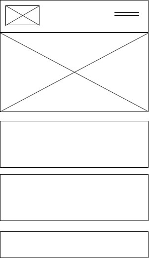
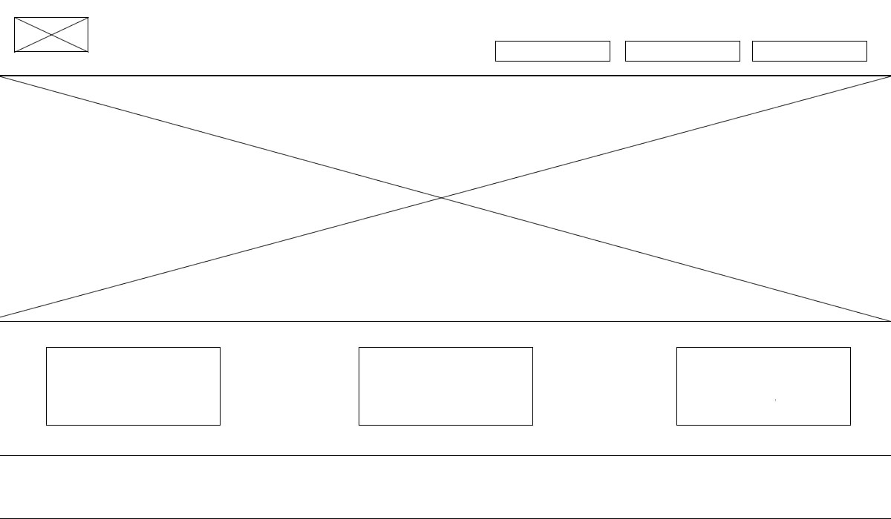

Reason: Olympic stories of perseverance and humanity that transcended medals..
This site honors the Olympic heroes who redefined success. Not through medals, but through perseverance, humanity, and heart. Through their stories, we want to remind you that greatness isn’t measured on podiums, but in the moments we rise, help others, and keep going against all odds. Because, as they proved, sometimes losing can be the most memorable victory of all."
Primary: #0085C7 (Olympic Blue) - Used for main headings and navigation
Secondary: #000000 (Black) - Used for body text and standard elements
Accent: #FFD700 (Olympic Gold) - Sparingly used for highlights and call-to-action buttons
Background: #FFFFFF (White) - Primary background color
Special: #ED2939 (Olympic Red) - Used for important alerts or notifications
Headings: "Playfair Display" (de Google Fonts)
Body Text: "Lato" (de Google Fonts)
Mobile View:
Desktop View:
